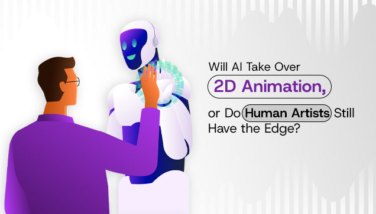

© Copyright 2022 © All Right Reserved.

What if we told you the future of content isn’t in hyper-realistic 3D... but in the nostalgic charm of 2D? That’s right. While the world chases CGI and cinematic universes, 2D animation is making a major comeback and it’s not just for kids' cartoons anymore. From startups to streamers, brands to blockbusters; everyone’s jumping back into the world of flat frames and bold outlines. Let’s explore why 2D animation is stealing the show in the modern digital era, what makes 2D animation services a hot asset for businesses and how your brand can tap into this visually captivating storytelling tool.
Once considered old-school, digital 2D animation is now dominating content strategies, marketing campaigns and entertainment platforms. Its simplicity, adaptability and emotional range make it perfect for short-form videos, explainer animations, social media reels and brand storytelling. A report highlighted on Medium.com emphasizes that brands today lean into 2D animation not just for nostalgia but for its speed, cost-efficiency and unmatched storytelling clarity. Unlike complex 3D rendering, 2D allows fast turnarounds, style versatility and creative freedom ideal for a world that craves content on the go.
Here’s why 2D animation is back in the spotlight and why brands of all sizes are tapping into its powerful potential:
Whether you’re a fintech startup or a fashion label, 2D animation lets your brand speak in a style that matches your identity: minimalist, quirky, emotional or bold.
Compared to 3D, 2D animation or vector animation, it needs fewer technical resources and lower costs, which is a win for small businesses and creative agencies.
Illustrated animations can be produced quickly, making them ideal for marketing campaigns with tight deadlines or iterative A/B testing.
2D animations can easily be adapted for different media, from social media reels and web banners to TV spots and mobile apps, providing a consistent look and feel across all touchpoints.
An animation with a visually engaging style tends to capture attention faster and hold viewers interest longer, especially when it's on social media platforms where attention spans are short.
Digital animation allows for rich, creative storytelling in a compact format which turns complex concepts into easily understandable visuals that are perfect for explainer videos and product demos.
With AI’s incorporation, the 2D animation services have become even more efficient with tools that are speeding up repetitive tasks like in-betweening and lip-syncing, which allows animators to focus on the creative aspects.
If you think digital 2D animation services are just for cartoons, think again. Businesses today are investing in specialized animation studios and creative agencies to elevate their content with 2D storytelling. Platforms like E2E Cloud highlight how cloud-powered rendering makes 2D even more efficient and accessible for creators. When it comes to the services of 2D animation, Illustrated Animation, Digital 2D Art and Vector Animations, they offer amazing ways to communicate complicated ideas in a visually tempting manner. It doesn't matter if you’re looking to create explainer videos, branded content or social media ads, these kinds of animation provide versatility and depth. A no brainer is to choose the right animation style that aligns with your brand’s vision and audience expectations.
Here’s where 2D animation services are driving impact:
Animated explainers using 2D visuals simplify complex ideas and increase audience understanding. They’re especially useful for SaaS, tech and healthcare.
2D animation creates scroll-stopping, emotionally resonant ads for platforms like Instagram, TikTok and YouTube Shorts.
Edtech platforms love stylized 2D motions for engaging learning modules, especially for kids, K-12 education and language training.
It’s crazy that AI is revolutionizing the world of 2D animation services, making processes faster, more cost-effective and scalable. When we come up with any powerful tool, it has its own set of advantages and limitations. Well, even though it improves efficiency and supports creative teams, it still lacks the emotional intelligence and flexibility that only human creativity can bring.
Let’s look at where AI performs best and where it still needs a human touch to truly shine.
| Category | Advantages | Limitations |
|---|---|---|
| Speed & Efficiency | Faster Production Cycles — Automates in-betweening and repetitive tasks. | Risk of Over-Reliance — Studios may sacrifice quality for speed. |
| Costs & Resources | Cost-Effective — Reduces labor and time costs for studios. | Limited Creative Flexibility — Tools often rely on datasets, not real-time vision. |
| Workflow Optimization | Smart Tools for Storyboarding & Cleanup — Improves workflow efficiency. | Style Homogenization — Excessive AI use may lead to uniform, predictable art. |
| Human Collaboration | Assists Human Animators — AI handles grunt work, freeing up creative focus. | Not a Replacement for Creativity — Still needs a human touch to tell stories. |
| Scalability | Remote & Scalable Production — Easily deployable across teams and locations. | Lack of Human Emotion — AI struggles with emotional nuance and originality. |
If we take a moment and think about the rise of AI in animation and compare it with human artists, I guess we all would agree that human artists still hold a powerful edge and it lies in their ability to feel, imagine, and emotionally connect. While AI can generate frames, mimic styles and speed up production, it lacks the empathy, cultural intuition and storytelling instincts that animators bring to the table. As emphasized in the article on Motion Marvels , the essence of great animation isn’t just in movement, it’s in meaning. Human creators understand subtext, humor, character arcs and subtle expressions in ways machines simply can’t. In the end, it’s the artist’s vision, not the algorithm that gives animation its soul.
With the rise of tools like generative AI and automated workflows, many ask: will AI replace traditional animators? The short answer is no, not really: it will transform them. According to the blog on Toonz Academy , which highlights that AI tools accelerate production and reduce costs, they cannot replicate the intuition, creativity and emotion that human animators bring especially in 2D digital art.
Here’s how AI is influencing the world of 2D animation artists:
Not by replacing them, but by redefining how they create.
AI assists with repetitive tasks like frame interpolation or lip-syncing, letting animators focus on creative direction.
Character arcs, personality nuances and stylized charm are still best crafted by a human mind.
Studios are now combining AI efficiency with human creativity, especially in digital 2D animation services to deliver faster without losing soul.
Not all animation studios are created equal, especially in the age of automation. Whether you need a brand film or a TikTok ad, picking the right 2D animation service can make or break your campaign. As mentioned in an article by Motion Marvels , it recommends agencies that embrace tech but stay rooted in creativity, offering full-service pipelines with room for collaboration. Guess what, a right 2D animator will not only deliver high-quality visuals but also understand your brand’s voice and goals. Therefore, when looking for a perfect service partner, it is very essential to look for studios that can balance innovative technology with a personalized approach which allows for flexibility and customization in their work. Hence, collaboration is the main key to ensuring that the final product aligns with your vision and connects with your audience.
Now coming to choosing a 2D animator, keep an eye out for these green flags that signal you're in good hands:
Not all that glitters is gold; so, watch out for these red flags before locking in your 2D animation partner.
As we continue to see that AI is shaping the world of 2D animation, making it clear that technology is a powerful ally, but at the same time, human creativity remains equally unmatched. AI efficiency and human instinct both create a perfect blend that is not only visually compelling but also emotionally resonant. In this era of digital dominance, 2D animation services have risen as a strong marketing solution. Offering businesses versatile, cost-effective and fascinating ways of storytelling. Therefore, by collaborating and partnering with the right 2D animation service provider, your brand can stay ahead in the game, delivering content that connects.
A story is the heart of every memorable brand that’s told with passion and precision. With Glocal Edit services, you’ll not only grab attention but also build everlasting trust and loyalty among the audience. Let us transform your captured moment into a masterpiece that drives engagement, boosts conversions and leaves a lasting impression.
Take the next step: Contact us today at Glocal Edit or +1(732) 344 4268 and let’s craft your brand’s next success story.
© Copyright 2022 © All Right Reserved.